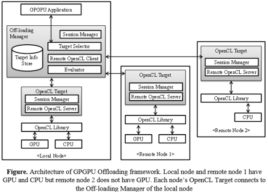

GPGPU offloading
General Purpose GPU (GPGPU) is a technology that enables high performance computing application to use GPU as a computation resource. Offloading is a technique that enables an application or a part of code to run in a remote node for various reasons such as high performance execution, security purpose, and so on. If the reason of offloading is for high performance execution, then remote node may have high performance computing resources than local node. It means applying the offloading technique to the GPGPU can execute high performance GPGPU application using remote side GPU. So, we are developing remote GPGPU framework that conducts offloading to achieve high performance execution of GPGPU application.

Publications
- SeloGPU: A Selective Off-loading framework for High Performance GPGPU execution Sejin Park, Jeonghyeon Ma and Chanik Park, Lecture Notes in Computer Science 7979, pp.242-249 – PaCT 2013
- Integrated Management of Remote GPGPU and CPU for High Performance Applications in Embedded Systems Sejin Park, Jeonghyeon Ma, and Chanik Park,Proceedings of 2013 International Symposium on Embedded Technology (ISET 2013), May 2013
- 디바이스 소셜리티에서의 GPGPU 자원 공유를 위한 오프로딩 프레임워크.마정현, 박세진, 박찬익. 한국차세대컴퓨팅학회 논문지 2014년 2월, Vol. 10, No. 1, pp 74-81
- TON (To Offload or Not): GPGPU 응용의 더 나은 수행 성능을 위한 오프로딩 결정 모델. 마정현, 박세진, 박찬익. 정보과학회논문지: 시스템 및 이론 제 41권 제 1호 (2014.2), pp 12-16
- GPGPU 응용의 고성능 원격수행을 위한 OpenCL 기반 오프로딩 프레임워크. 박세진, 마정현, 박찬익. 한국차세대컴퓨팅학회 논문지 2013년 4월, Vol. 9, No. 2, pp 44-53
Patents
- 연산 자원 결정 방법 및 장치 박찬익, 박세진, 마정현. 출원, 10-2013-0033366, 2013-03-18